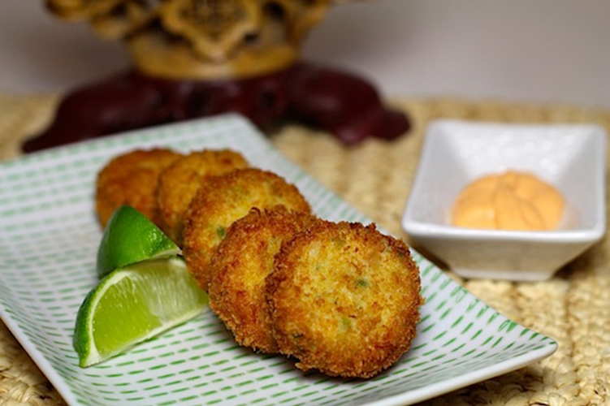

Thai Crab Cakes
Copied from 'Chef Katie Chin'

Description
Looking to spice things up for your holiday party this year? Why not Thai this recipe on for size? These Thai Crab Cakes are loaded with lump crab meat and delicious Thai flavors including lime juice, fish sauce, ginger, cilantro and thai chilies. They’re light yet filling and make the perfect finger food. I like to serve them with a spicy Srircha Mayo and store-bought Thai Sweet Chili Sauce. Amidst the usual line-up of Swedish meatballs and and hot cheese dips, dazzle your guests with these exotic and impressive Thai small bites. So delicious, my kids left a plate of cookies and a couple of Thai Crab Cakes out for Santa last year!
Ingredients
- 6 shelled and deveined medium-sized raw shrimp
- 1 teaspoon fish sauce (nam pla)
- 1 lb lump crab meat, picked over for shells
- 3 large eggs, divided
- 3 tablespoons + 1 cup panko bread crumbs, divided
- 4 tablespoons finely chopped green onion (scallion), white and green parts
- 4 tablespoons finely chopped fresh coriander leaves (cilantro)
- 1 tablespoon freshly squeezed lime juice
- 1 fresh hot red or green chili, preferably Thai, finely minced
- 1 teaspoon peeled minced fresh ginger
- 1 teaspoon salt
- 1/4 teaspoon freshly ground black pepper
Srircha Mayo:
- ½ cup mayonnaise
- 1 tablespoon Sriracha chili sauce
- ½ teaspoon lime juice
- Lime wedges for serving
Method
- Purée the shrimp in a food processor until a smooth paste forms. Add the fish sauce and puree for 30 additional seconds. In a medium bowl, combine the shrimp purée, crab meat, egg, 3 tablespoons bread crumbs, green onion, coriander leaves, lime juice, chili, ginger, salt and pepper. Place the mixture in the refrigerator until you are ready to cook as it will be easier to shape .
- Shape crab meat mixture into 21/4 in (5.5 cm) patties in diameter. Lightly beat the remaining two eggs in a bowl. Place the remaining 1 cup of panko bread crumbs in a deep plate. Dip patties one at a time in the egg mixture and then in the panko mixture until evenly covered.
- Heat the oil in a large non-stick skillet on moderately high heat. Working in batches, place the crab cakes in the pan (do not crowd the pan), and cook until golden brown, about 4 minutes on each side. Combine Srircha mayo ingredients and serve with crab cakes and lime wedges on the side.
Back to Home